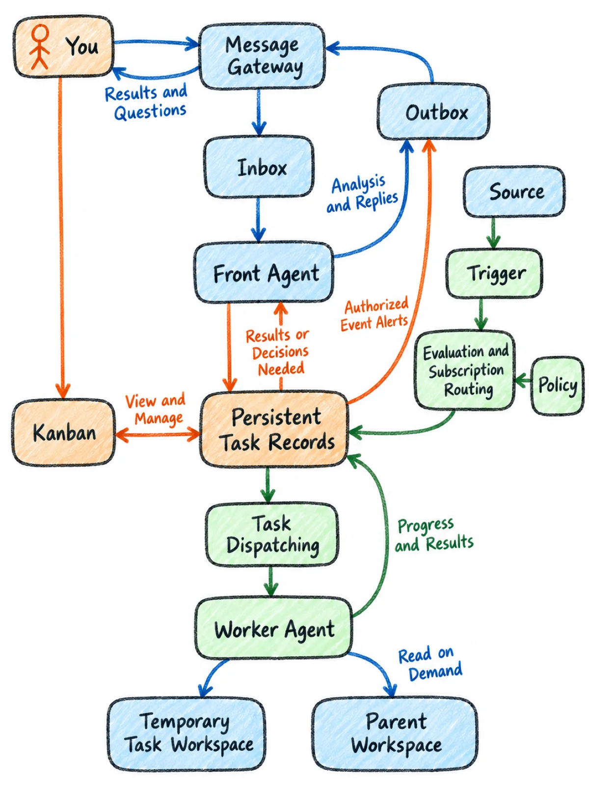

crayon-diagrams
crayon-diagrams is a Claude Code skill that turns technical article structure into consistent, mobile-readable hand-drawn crayon illustrations — architecture diagrams, process flows, comparison charts, and task-board snapshots.
